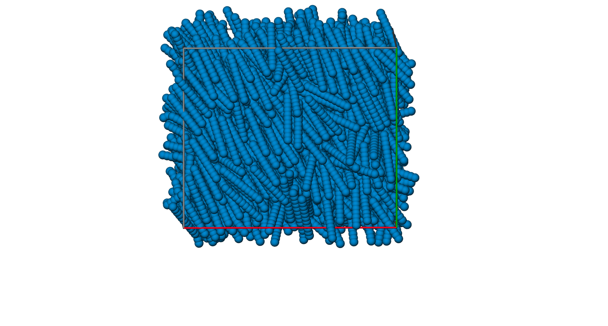

by Yawei Liu @ Sydney, Australia 2021/05/30
In the simulations, we save the positions (\(x,y,z\)) and orientations (\(\mu_x,\mu_y,\mu_z\)) of the special sphere in each rods in result_atoms.log file, as shown below:
ITEM: TIMESTEP
0
ITEM: NUMBER OF ATOMS
1080
ITEM: BOX BOUNDS pp pp pp
-1.1774184599270537e+01 1.1774184599270537e+01
-1.1329713887893588e+01 1.1329713887893588e+01
-1.1774184599270537e+01 1.1774184599270537e+01
ITEM: ATOMS id mol type x y z mux muy muz
1 1 1 6.52798 -4.66256 -0.313528 0.568254 -0.820304 -0.0647147
12 2 1 -2.33249 -3.56186 2.07013 -0.139812 0.73499 -0.663507
23 3 1 1.33257 0.510454 9.1816 0.114889 0.557617 -0.822109
34 4 1 -5.6695 -5.62791 -8.45804 -0.546225 -0.408355 0.731358
45 5 1 10.3018 -5.92995 11.421 -0.955831 -0.230191 -0.182756
56 6 1 11.273 -9.62742 10.5093 0.161756 0.980883 0.10818
67 7 1 10.9102 -6.33117 9.96562 -0.896238 -0.440009 -0.0561227
78 8 1 -8.28074 -10.6135 0.445832 0.661023 0.628934 -0.409256
...We define a Python class called Snapshots to read this file:
class Snapshots():
def __init__(self,filename):
self.filename = filename
self.snap_number = None
self.lines = []
frames = []
with open(filename,'r') as f:
index = 0
for i,line in enumerate(f):
self.lines.append(line)
if line.strip() == "ITEM: TIMESTEP":
index = 0
first_line = i
else:
index += 1
if index == 1:
timestep = int(line.strip())
elif index == 3:
atom_number = int(line.strip())
last_line = first_line + 8 + atom_number
elif index == 5:
line = re.split(r'\s+',line.strip())
xlo, xhi = list(map(float,line[-2:]))
elif index == 6:
line = re.split(r'\s+',line.strip())
ylo, yhi = list(map(float,line[-2:]))
elif index == 7:
line = re.split(r'\s+',line.strip())
zlo, zhi = list(map(float,line[-2:]))
elif index > 8 and index == atom_number+8:
frame = [timestep, atom_number, xlo, xhi, ylo, yhi, zlo, zhi, first_line, last_line]
frames.append(frame)
self.snapN = len(frames)
columns = 'timestep solid_atom_number xlo xhi ylo yhi zlo zhi first_line last_line'.split(' ')
dtypes = [int,int,float,float,float,float,float,float,int,int]
frames = pd.DataFrame(data=frames,columns=columns)
self.frames = frames.astype(dict(zip(columns,dtypes)))Running rawsnaps = Snapshots('./results_atoms.log'), all data in result_atoms.log will be saved in rawsnaps which has a variable snapN representing the number of snapshots in the file.
We define another Python classes to read a specified snapshot in rawsnaps.
class Snapshot():
def __init__(self,body,snaps,snap_id):
self.body = body
frame = snaps.frames.iloc[snap_id]
self.timestep = frame['timestep']
#box
xlo,xhi = frame[['xlo','xhi']]
ylo,yhi = frame[['ylo','yhi']]
zlo,zhi = frame[['zlo','zhi']]
Lx,Ly,Lz = [xhi-xlo,yhi-ylo,zhi-zlo]
self.box = freud.box.Box(Lx,Ly,Lz)
#rebuild bodys
first_line = int(frame['first_line'] + 9) #lammps dump custom has 9 lines before atom info.
last_line = int(frame['last_line'])
self.atoms = None
self.bodys = None
self._build_bodys(snaps,first_line,last_line)
self.bodyN = len(self.bodys)
self.global_nematic_order = None
self.n = None
self.c = None
self.global_smectic_order = None
def _perpendicular_vector(self,v):
if not v[0] and not v[1]:
if not v[2]:
raise ValueError('zero vector')
return np.array([0, 1, 0])
return np.array([-v[1], v[0], 0])
def _build_bodys(self,snaps,first_line,last_line):
columns = 'id mol type x y z mux muy muz'.split(' ')
dtypes = [int,int,int,float,float,float,float,float,float]
self.atoms = pd.DataFrame(data=[re.split(r'\s+',line.strip()) for line in\
snaps.lines[first_line:last_line+1]],columns=columns)
self.atoms = self.atoms.astype(dict(zip(columns,dtypes)))
mol = self.atoms['mol']
u, indices, count = np.unique(mol, return_inverse=True, return_counts= True)
#atomN = count[indices][self.atoms['type']==1]
###compress mol ID from ID = 0
self.atoms['mol'] = np.arange(len(u))[indices]
origins = self.atoms[self.atoms['type']==1]
tails = self.atoms[self.atoms['type']==2]
xs = origins[['x','y','z']].values
us = origins[['mux','muy','muz']].values
if tails.empty:
vs = np.array([self._perpendicular_vector(us[i]) for i in range(len(us))])
else:
vs = tails[['mux','muy','muz']].values
qs = [R.align_vectors([us[i],vs[i]],[[1.,0,0],[0,1.,0]])[0].as_quat() for i in range(len(us))]
#prime axis of the orentation
r = R.from_quat(qs)
us = r.apply(self.body.u)
vs = r.apply(self.body.v)
#remain the center of body in the box
cms = xs+r.apply(self.body.cm)
cms = self.box.wrap(cms)
#cms -= (cms/self.box.L+np.sign(cms)/2.).astype(int)*self.box.L
bodys = np.concatenate((cms, us, vs, qs), axis=1)
columns = 'cmx cmy cmz mux muy muz cx cy cz qx qy qz qw'.split(' ')
dtypes = [float,float,float,float,float,float,float,float,float,float,float,float,float]
self.bodys = pd.DataFrame(data=bodys,columns=columns)
self.bodys.astype(dict(zip(columns,dtypes)))
def _compute_global_nematic_order(self):
us = self.bodys[['mux','muy','muz']].values
delta = np.diagflat([1,1,1])
f = lambda x: 3./2.*x[:,None]*x-1./2.*delta
Q = np.sum(np.apply_along_axis(f, 1, us),axis=0)/len(us)
w,v = np.linalg.eig(Q)
self.global_nematic_order = np.amax(w)
self.n = np.array(v[:,np.argmax(w)])
self.c = np.array(v[:,np.argmin(w)])
def _compute_global_smectic_order(self,H):
tau_real = 0
tau_image = 0
if not self.global_nematic_order: self._compute_global_nematic_order()
tmp = np.dot(self.bodys[['cmx','cmy','cmz']].values,self.n) / H * 2 * np.pi
tau_real = np.mean(np.cos(tmp))
tau_image = np.mean(np.sin(tmp))
self.global_smectic_order = np.sqrt(tau_real**2.+tau_image**2)Running following codes
snap = Snapshot(body, rawsnaps, 1000)
print("Timesteps: %d" % snap.timestep)
print("Body Number: %d" % snap.bodyN)
print("Box size: %f %f %f" % (snap.box.Lx, snap.box.Ly, snap.box.Lz))
print("Volume fraction: %f" % (snap.bodyN / snap.box.volume * body.volume))we obtain a variable snap which represents the 1000th snapshot in the result_atoms.log and some basic info of this snapshot as follow:
Timesteps: 10000000
Body Number: 1080
Box size: 23.604961 20.071917 22.549898
Volume fraction: 0.449888The position and orientation of each rods in the systems are saved in a Pandas DataFrame called snap.bodys as shown below
cmx cmy cmz mux muy muz cx cy cz qx qy qz qw
-2.489921 -3.698112 9.446906 0.602640 0.778787 0.174115 -0.790867 0.611988 1.387779e-17 0.038493 -0.078458 0.438776 0.894337
2.827316 -4.723114 2.749676 0.425819 0.900758 0.085518 -0.904070 0.427385 1.387779e-17 0.022900 -0.036156 0.534587 0.844029
-11.020419 5.022142 6.854266 0.378617 0.834733 -0.399838 -0.910698 0.413073 -1.110223e-16 -0.110632 0.171661 0.530306 0.822842
... ... ... ... ... ... ... ... ... ... ... ... ... ...
-4.795779 3.265872 -2.369987 -0.056612 -0.909607 -0.411594 0.998069 -0.062117 8.326673e-17 -0.153410 -0.144159 0.712407 -0.669447
-2.739685 8.129457 0.303597 0.169454 -0.905760 -0.388437 0.982946 0.183894 -8.326673e-17 0.126575 0.152451 -0.626124 0.754126
11.059372 5.865652 6.623319 -0.594036 -0.775236 -0.214781 0.793760 -0.608231 1.387779e-17 -0.096867 -0.047810 0.891478 -0.439999Below is a Python code to use Plato to visualise this snapshot
def _plato_sphere_frame(snap,zoom=1.0,size=(20, 20)):
Lx = snap.box.L[0];Ly = snap.box.L[1];Lz = snap.box.L[2]
xy = xz = yz = 0
colors= [pred]+ [pgreen] + [porange] + [pgrey]*9
box_prim = draw.Box(Lx=Lx, Ly=Ly, Lz=Lz, width=0.2, color=colors)
bodys = snap.bodys
atoms = snap.body.atoms-snap.body.cm
cms = bodys[['cmx','cmy','cmz']].values
r = R.from_quat(bodys[['qx','qy','qz','qw']].values)
positions = []; colors = []
for i in range(snap.body.N):
position = r.apply(atoms[i]) + cms
positions += list(position)
colors += [pblue]*len(position)
sphere_prim = draw.Spheres(
positions=positions,
radii=[snap.body.D/2.]*len(positions),
colors=colors,
vertex_count=200
)
return draw.Scene((sphere_prim, box_prim), zoom=zoom,size=size)Running _plato_sphere_frame(snap,zoom=0.5,size=(30,30)).show(), we obtain

Obviously, it is a nematic phase. This is consistent with the equation of state we plotted last week: at volume fraction of \(\sim0.45\), the system is in nematic phase[1].
© 2021 Yawei Liu. All content licensed under the Creative Commons Attribution-NonCommercial License 4.0 International (CC BY-NC 4.0).